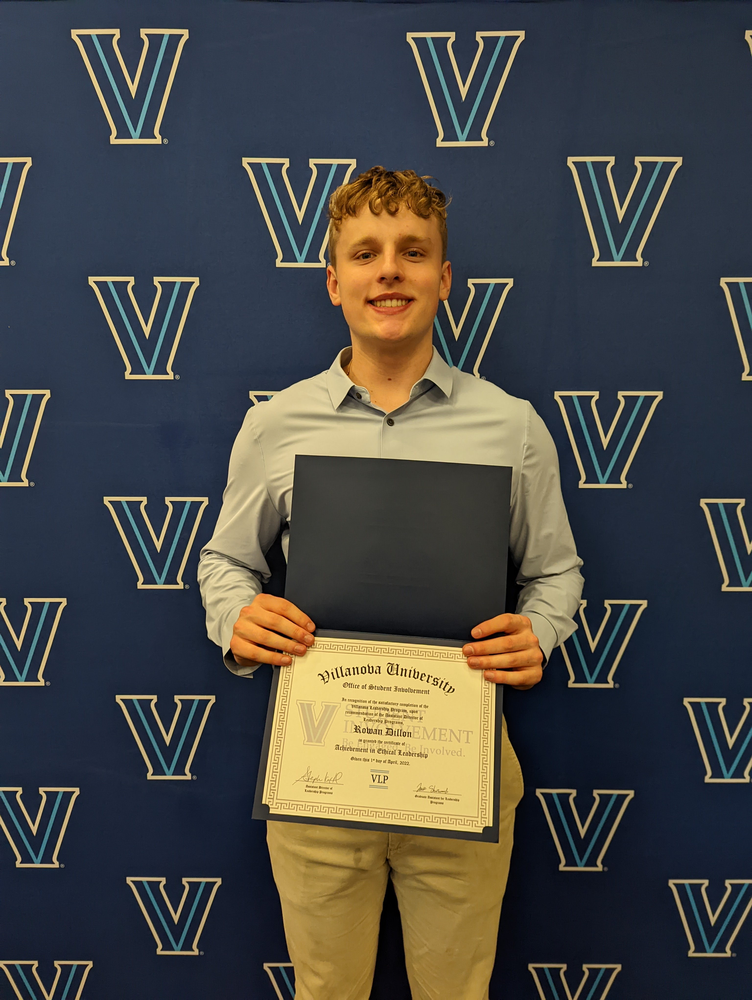
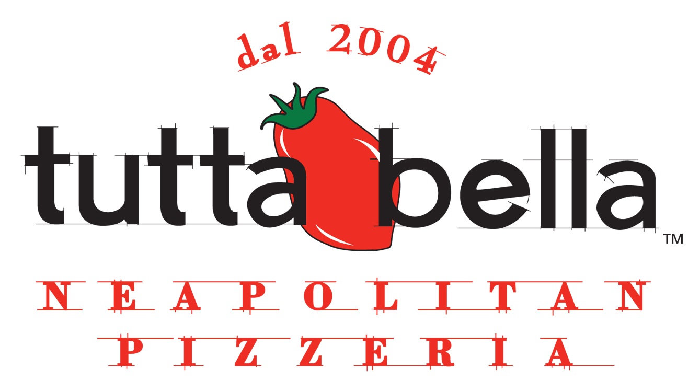
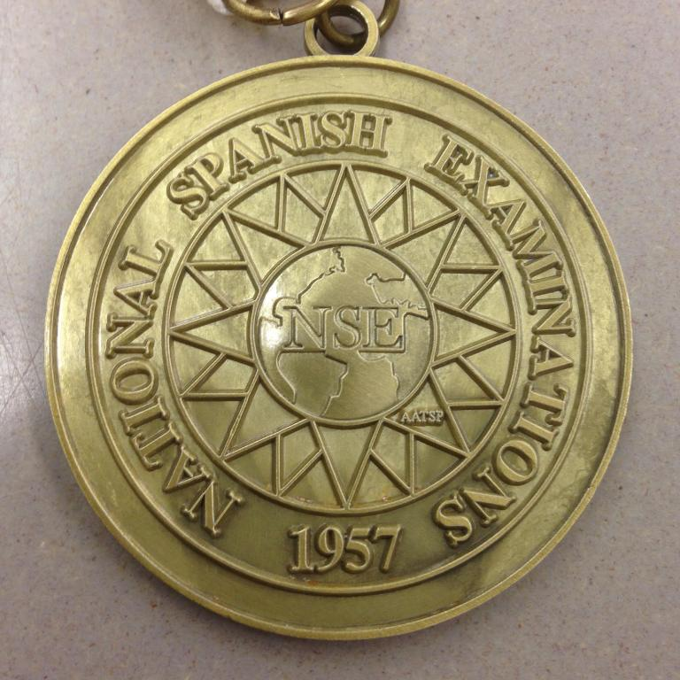

Villanova Leadership Program Certificate (VLP) 2022

The Villanova Leadership Program is a club hosted by two Villanova faculty, Jack Sherwood and Steve Koch, who are passionate about educating Villanova students about leadership and community. Throughout the semester, 6 leadership seminars are hosted by Jack and Steve with featured guest speakers. VLP members must attend and participate in 4 of 6 sessions to receive the certificate. Each session highlights a different key component of strong leadership. Students are encouraged to network at sessions or participate in community builder activities outside of the sessions. Above, there is a photo of me and the other winners of the free throw community builder contest, as well as a photo of me at the VLP end-of-year dinner.
Tutta Bella Scholar Athlete 2020

The Tutta Bella Scholar Athlete award is given to high school athletes who demonstrate excellence both on and off the court. Coaches are asked to choose one player from their team who is both dedicated to their studies, their sport, and their community. I was one of the 5 scholar athletes selected during the winter season.
National Spanish Examination Bronze Medal Recipient 2019

The National Spanish Examination is an online exam where students are asked a variety of questions to test their proficiency in Spanish. The exam requires students to be strong readers and listeners of Spanish, as audio clips of native speakers and Spanish articles are the basis of the test questions. I was awarded the bronze medal, placing me in the top 10% of 160,000+ students.
Issaquah "School Pool" Logo Design Contest Winner 2018